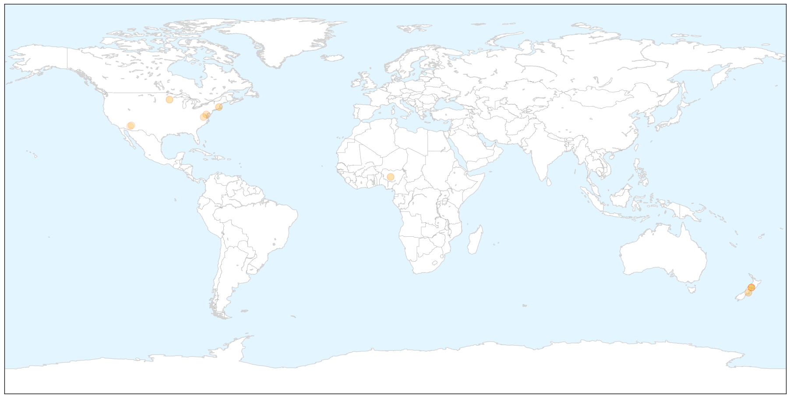

Influenza
30-Day Web Trend
0 alerts, 0 warnings

30-Day Twitter Trend
0 alerts, 0 warnings

Article Locations

X

Article Confidences

Top Articles:
- 0.987
- Get vaccinated before the flu gets you
- 0.985
- Get vaccinated before the flu gets you
- 0.982
- Get vaccinated before the flu gets you
- 0.981
- Controlling Avian Flu in West Africa: Nuclear-Derived Techniques Enable Early Detection of Outbreaks
- 0.970
- Health Advisories From CDC Calm Avian Flu Worries
- 0.954
- The 1872 Equine Influenza Epidemic That Sickened Most U.S. Horses
- 0.751
- June 30, 2015 Archives
- 0.751
- June 30, 2015 Archives
- 0.625
- trivalleycentral.com: Area News
- 0.502
- ACIP Issues New Recommendation for MenB Vaccination
Top Tweets:
-
No tweets found for Jul 01, 2015